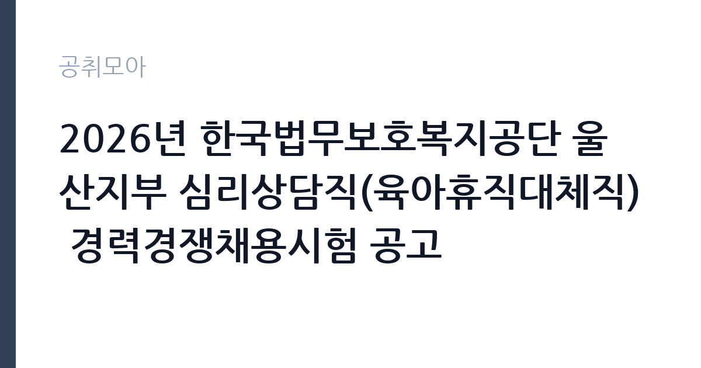

[공공기관] 2026년 한국법무보호복지공단 울산지부 심리상담직(육아휴직대체직) 경력경쟁채용시험 공고
한국법무보호복지공단 · 울산 · 마감 2026-10-13 (D-16) · 출처 잡알리오

한눈에 보는 모집 조건
| 기관 | 한국법무보호복지공단 |
|---|---|
| 공고명 | 2026년 한국법무보호복지공단 울산지부 심리상담직(육아휴직대체직) 경력경쟁채용시험 공고 |
| 고용형태 | 기간제(육아휴직대체) |
| 근무지 | 울산 |
| 게시일 | 2026-09-28 |
| 마감일 | 2026-10-13 (D-16) |
지원자격, 이렇게 읽으세요
- 공공기관 채용공시
- 세부 조건은 원문 공고문 확인
필수 자격은 원서접수 마감일 기준 다음 자격증 중 하나 이상 소지입니다. 정신건강임상심리사 2급 이상, 한국상담심리학회 상담심리사 2급 이상, 임상심리사 2급 이상, 한국상담학회 전문상담사 2급 이상이 해당합니다. 응시 연령은 만 18세 이상 만 60세 이하이며 남성 지원자는 병역 의무 불이행 사실이 없어야 합니다. 공단 규정에 따라 생활관 비상대기와 비상출동이 가능한 분이어야 하며 공단 인사규정의 임용 결격사유에 해당하지 않아야 합니다. 자격증 취득 예정자는 해당하지 않으므로 마감일 기준 소지 여부를 확인하십시오.
이 공고의 포인트
이 공고의 강점은 진입 장벽의 구성이 명확하다는 점입니다. 자격증 하나로 지원 자격이 판단되므로 스펙 경쟁보다 실무 역량이 중요합니다. 법무보호복지공단은 법무부 산하 공공기관으로 출소자와 보호관찰 대상자의 사회복귀를 돕는 기관이라 상담직의 역할이 핵심 업무에 속합니다. 학력과 거주지 제한이 없어 울산 외 지역 상담 전공자도 지원할 수 있습니다. 육아휴직대체직이라 계약 기간이 정해져 있지만 공공기관 상담 현장 경험을 쌓을 수 있는 자리입니다.
전형은 어떻게 진행되나
경력경쟁채용시험으로 서류전형과 면접시험을 거쳐 선발합니다. 원서접수는 공단 채용 페이지(recruit.incruit.com/koreha)에서 진행되며 마감일 전에 자격증 사본과 경력 증빙 서류를 준비해야 합니다. 서류전형에서는 자격증 등급과 상담 관련 경력을 중심으로 평가하므로 경력기술서에 심리상담 실무 경험을 구체적으로 기재하는 것이 좋습니다. 면접에서는 보호대상자 상담 사례에 대한 질문이 나올 수 있으니 관련 경험을 정리해 두십시오.
원문에서 확인한 전형 방식
- 응시연령: 원서접수 마감일 기준 만 18세 이상 및 만 60세 이하(공단 정년) - 남성의 경우 「병역법」에 따라 병역의무 불이행 사실이 없는 자 - 성별 ? 학력 ? 거주지 제한 없음 - 공단 규정에 따라 생활관 비상대기 및 비상출동이 가능한 자 - 공단 인사규정 등에 의한 임용결격사유에 해당되지 않는 자 【별첨2】 임용 결격사유 참조 - 임용예정일에 근무가 가능한 자 - 다음 중 1개 이상 자격증 소지자(원서접수 마감일 기준) ① 정신건강임상심리사 2급 이상 ② 상담심리사 2급 이상 (※ 한국상담심리학회) ③ 임상심리사 2급 이상 ④ 전문상담사 2급 이상 (※ 한국상담학회)
이런 분께 추천해요
- 상담심리사나 임상심리사 자격증을 보유하고 공공기관 상담 현장 경험을 쌓고 싶은 분께 적합합니다.
- 보호관찰 대상자와 출소자 등 특수 대상 상담에 관심 있는 분께 잘 맞습니다.
- 울산 지역에서 상담 전공을 살려 일하고 싶은 분께 좋습니다.
지원 전 체크리스트
- 보유 자격증이 공고에서 요구하는 4종 중 하나에 해당하는지 확인하셨습니까.
- 육아휴직대체직이라 휴직자 복귀 시 계약이 끝난다는 점을 확인하셨습니까.
- 생활관 비상대기와 비상출동 근무가 가능한지 점검하셨습니까.
- 공단 임용 결격사유에 해당하지 않는지 별첨 기준을 확인하셨습니까.
모집 일정과 제출 타이밍
접수 마감은 2026년 10월 13일이며 이후 서류전형 합격자 발표와 면접시험 순으로 진행됩니다. 공단 채용은 지부별로 수시로 공고가 올라오므로 이번 울산지부 공고를 놓치면 다른 지부 공고를 기다려야 합니다. 자격증 사본과 경력증명서 발급에 시간이 걸리므로 마감 3일 전까지는 서류를 갖춰 두는 것이 좋습니다. 면접 일정은 서류전형 합격자 발표 시 함께 안내되므로 공단 홈페이지 채용 게시판을 수시로 확인하십시오.
직무 이해하기: 공공기관
한국법무보호복지공단은 출소자와 보호관찰 대상자, 갱생보호 대상자의 숙식 제공과 직업훈련, 심리상담을 통해 사회복귀를 돕는 법무부 산하 공공기관입니다. 심리상담직은 보호대상자의 심리검사와 개인 상담, 집단 상담 프로그램을 맡으며 위기 상황 개입과 외부 전문기관 연계 업무도 수행합니다. 울산지부 소속으로 울산 지역 보호대상자를 담당하므로 지역 특성을 이해하는 것이 도움이 됩니다. 생활관 비상대기 체계가 있어 긴급 상황 발생 시 출동할 수 있어야 합니다.
자기소개서 작성 팁
자기소개서에는 상담 자격 취득 과정과 실제 상담 경험을 중심으로 작성하십시오. 내담자 유형과 회기 수, 사용한 상담 기법을 구체적으로 적으면 신뢰도가 높아집니다. 보호대상자처럼 자발성이 낮은 내담자를 다룬 경험이 있다면 라포 형성과 동기 부여 전략을 부각하는 것이 좋습니다. 공공기관 상담직은 기록 관리와 윤리 의식을 중요하게 보므로 비밀보장과 사례 기록 경험을 언급하면 좋은 평가를 받을 수 있습니다.
면접 준비 포인트
면접에서는 보호대상자 상담 사례와 위기 개입 경험을 묻는 경우가 많습니다. 자살 위험이나 폭력 위험이 있는 내담자를 만났을 때의 대응 절차를 정리해 가십시오. 생활관 비상출동 상황에 대한 질문이 나올 수 있으니 야간과 휴일 대응이 가능하다는 점을 분명히 밝혀야 합니다. 공단의 설립 목적과 사회복귀 지원 사업에 대한 이해를 보여주면 기관 적합도에서 좋은 점수를 받을 수 있습니다.
급여·근무조건 읽는 법
원문에 보수 금액이 명시되어 있지 않으므로 공고문의 보수 항목에서 확인하셔야 합니다. 공단 육아휴직대체직은 공단 보수규정에 따라 휴직자의 직급에 상응하는 보수를 받는 것이 일반적입니다. 정확한 월 보수와 수당, 상여금 지급 여부는 원문 공고문과 울산지부 채용 담당자 안내를 통해 확인하십시오. 대체직은 계약 기간이 정해진 자리이므로 퇴직금 지급 조건과 4대 보험 적용 여부도 지원 전에 확인하는 것이 좋습니다.
자주 묻는 질문
- 육아휴직대체직은 계약 기간이 어떻게 됩니까?
휴직자의 휴직 기간 동안 근무하는 자리로 휴직자 복귀 시 계약이 종료됩니다. 정확한 계약 기간은 원문 공고문에서 확인하십시오. - 자격증 4종 중 하나만 있으면 됩니까?
그렇습니다. 정신건강임상심리사와 상담심리사, 임상심리사, 전문상담사 2급 이상 중 하나를 원서접수 마감일 기준으로 소지하면 됩니다. - 울산에 살지 않아도 지원할 수 있습니까?
가능합니다. 거주지 제한이 없으므로 타 지역 거주자도 지원할 수 있습니다. 다만 생활관 비상대기와 비상출동이 가능해야 하므로 출퇴근 거리를 고려하십시오.
함께 보면 좋은 공고
[공공기관] 한전KPS(주)강원충북전력지사 단기노무원(신청주지점 송전업무정비보조) 채용 공고(29차) — 마감 2026-09-30[공공기관] [속리산] 속리산국립공원사무소 기간제(탐방해설) 직원 채용 재공고 — 마감 2026-10-08[공공기관] 발전공기업 통합실무지원단장 채용공고 — 마감 2026-10-08출처: 잡알리오 공개정보를 바탕으로 공취모아가 정리한 안내글입니다. 모집 조건·일정은 변경될 수 있으니 지원 전 반드시 원문 공고문을 확인하세요. 본 글은 정보 제공용이며 합격을 보장하지 않습니다.